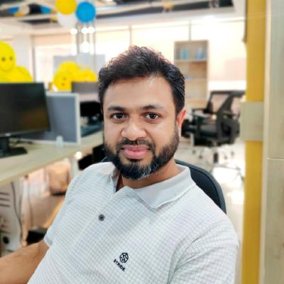

Rakibul Hasan
Software Engineer in Test
- +880 - 01911 - 726176
- cse.rakib@gmail.com
- rakibhasan.github.io
- Dhaka, Bangladesh

With 6+ years of experience, I am curious and passionate to automation & manual testing within agile environment in different projects as a core member, looking forward to work within excellent friendly team & environment with immense career growth.
Work Experiences
Sr. Software Engineer in Test
- Validating business stories, creating test plans, preparing test data and executing test cases from user story and acceptance criteria
- Performing both manual & automation testing
- Writing automation scripts for both APIs and UI testing
- Collaborating with internal & external developer by following Agile Scrum and Kanban Process
- Debug, Troubleshoot, Log file analysis to detect issue
- Reporting and handling bugs life cycle to JIRA
- Innovate new idea, solving long Test Process, Knowledge sharing session with teammates
- Lead the Team to make jobs done properly as required
- Checking health of projects and running CI/CD pipeline
Sr. SQA Engineer
- Projects: ODHYYON (Education ERP, Pay2Fee (Payment Gateway), Smart HRM and etc
- Planning Test, Preparing & executing Test cases
- Black box testing, Functional tests, Feature testing, Regression testing
- Performing both manual & automation testing
- Performing load and performance testing
- Reporting bugs and handling their life cycle
SQA Engineer
- Projects: QUITCH, MEDIDENT, MEAD PARTNERS, OOH MEDIA
- Design test plan, test cases, test scenarios & develop test data
- Execute Test Cycles and Capture Test Results
- Jump into a team and work as a regular tester for hours/days/weeks
- Work in Agile methodology
SQA Engineer
- Understand SDLC (Software Development Life Cycle)
- Understand the requirement and design test procedures and test cases for automation testing
- Design testing scenarios and develop test cases
- Execute all the test case
- Performing both manual & automation testing
- Performing load and performance testing
- Reporting bugs and handling their life cycle